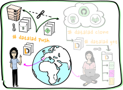

Technical Challenges to Data Sharing
GliMR Webinar - 23 April 2024
 @jsheunis
@jsheunis
 jsheunis
jsheunis
Psychoinformatics lab,
Institute of Neuroscience and Medicine, Brain & Behavior (INM-7)
Research Center Jülich, Germany
Slides:
jsheunis.github.io/glimr-2024
jsheunis.github.io/glimr-2024
Acknowledgements
|
Funders


|
|
Collaborators
|
|
Technical challenges to data sharing?

Not much, relative to the social, procedural and legal challenges
Development history
=> As technology develops, so do our tools to share data
Of course, there are still challenges:
But there are also existing solutions:
All roads lead to data: 1
=> Free for all
All roads lead to data: 2
=> So-called data islands
All roads lead to data: 3
=> Users don't see the actual data, develop code based on samples
All roads lead to data: 4
=> Code from all over, data from all-over
Examples of privacy preserving technology and decentralized tools:
- OpenMined: secure connections, running algorithms without seeing data
- Vantage6: delivering algorithms to data stations and collect their results
- Personal Health Train: federated machine learning in radiomics
- DataLad: decentralized data storage, access, collaboration, tracking
- COINstac: decentralized pipelines, results aggregation, differential privacy
- EBRAINS: GDPR-compliant digital research infrastructure of Human Brain Project
- Canadian Open Neuroscience Platform: FAIR data access while keeping personal data private
What is the future?
What is the future?
Example of decentralized code-to-data

Example of decentralized code-to-data:

Example of decentralized code-to-data

Examples of metadata-based catalogs
- Google Dataset Search: https://datasetsearch.research.google.com/
- Jülich Data: https://data.fz-juelich.de/
- DataLad Catalog, e.g.: https://data.sfb1451.de/
What is the future?
- Interoperability with widely used tools and standards!
- Semantic metadata, e.g. https://www.w3.org/TR/vocab-dcat-3/
- Technical expertise development and nurturing!